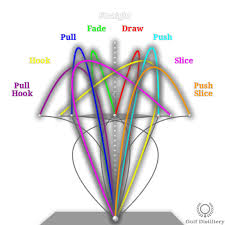
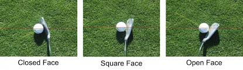
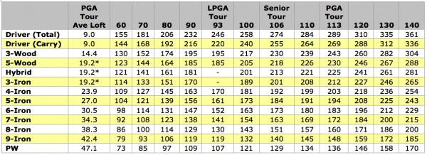

Home
Variables of golf
some important variables
variables
- wind
- rain
- clubhead speed
- clubhead face
- balance
wind
wind can be a major problem when playing golf, for example if you are golfing but there is wind and you try to hit it straight the ball might fly right.
rain
rain can affect the way you play golf because it weighs the ball down so it can't go as far and more commonly will stop you from making clean contact with the ball and your club face will slip.

depending on how you swing or the speed and finally the rotation the club puts on the ball.

based off of the club direction it hits the balls but each club should be facing differently based on the angle of the clubhead

every mile per hour gained in clubhead speed results in the ball traveling 2.3 yards further. An increase of 5 mph will result in an increase of 11+ yards of distance. On the golf course, that's a significant difference.
3